We are finishing our PurrPets breed guide with the rarest, most exotic felines. These breeds often look like mini-wildcats or have unique textures!
| Breed Name | Visual Example | The "Wild" Fact |
|---|---|---|
| Burmilla | 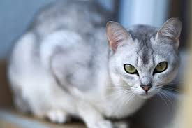 |
A rare cross between a Burmese and a Chinchilla Persian. |
| Snowshoe | 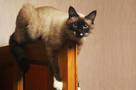 |
Pointed cats with white "boots" on all four paws. |
| Khao Manee | 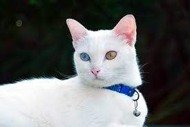 |
The "Diamond Eye" cat—often has one blue eye and one gold eye. |
| Sokoke | 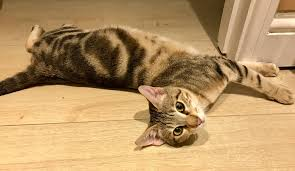 |
A natural breed from Kenya with a "wood-grain" coat pattern. |
| Havana Brown | 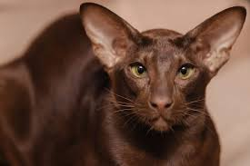 |
The only cat with a truly chocolate-brown coat and whiskers! |
| Australian Mist | 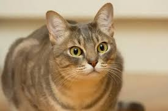 |
Australia's first home-grown breed; known for being very laid back. |
| Maine Coon | 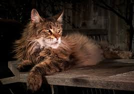 |
The "Gentle Giant" with tufted ears and a huge, bushy tail. |
| Persian Cat | 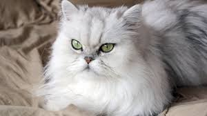 |
Known for their long, luxurious coats and "sweet" flat faces. |
| Abyssinian | 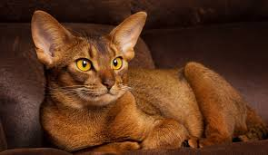 |
One of the oldest breeds; highly active and very intelligent. |
| Egyptian Mau | 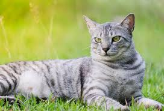 |
The fastest domestic cat; capable of running up to 30 mph! |
| Ragamuffin | 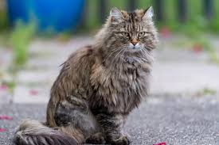 |
Like a Ragdoll, but even bigger and fluffier. Very mellow! |
| Himalayan | 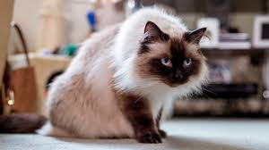 |
A cross between a Persian and a Siamese; beautiful blue eyes. |
| Selkirk Rex | 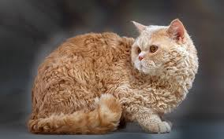 |
The "Cat in Sheep's Clothing" with thick, curly, wooly fur. |
| Somali | 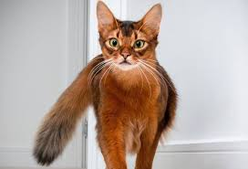 |
A long-haired version of the Abyssinian with a fox-like tail. |
| Singapura | 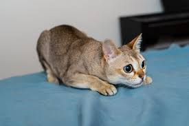 |
The world's smallest domestic cat breed. Full-grown adults stay tiny! |
| Korat | 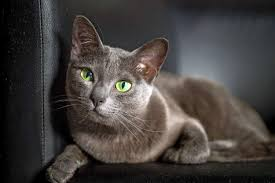 |
A silver-blue cat from Thailand; they have heart-shaped faces. |
| Tonkinese | 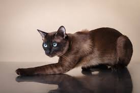 |
A perfect blend of Siamese and Burmese; very playful and affectionate. |
| Turkish Van | 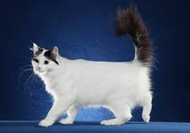 |
The "Swimming Cat." They have a rare coat that loves the water. |
The Turkish Van is known as the "Swimming Cat." Unlike most cats who hate water, this breed has a unique cashmere-like texture to its fur that is water-resistant, and they actually enjoy taking a dip in the bathtub or pool!